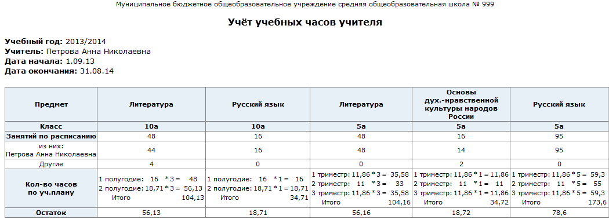

|
Учёт учебных часов преподавателя
|
| · | количество часов, проведённых согласно расписанию указанным учителем за этот период времени;
|
| · | количество часов, проведённых согласно расписанию другими учителями за этот период времени;
|
| · | количество часов согласно учебному плану.
|
